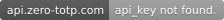
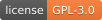
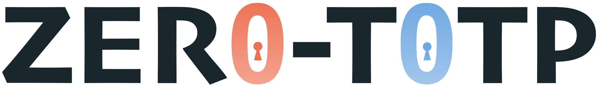

Zero-TOTP documentation
Welcome to the Zero-TOTP documentation. This documentation is intended to help you get a better understanding of how Zero-TOTP works and how you can self-host it.
Warning
As Zero-TOTP is still in development, this documentation is not yet complete and is under active construction. If you have any questions, feel open an issue on the GitHub repository




Contributors :
The project
Zero-totp is a TOTP client project available as a web app, an iOS app and a CLI app, where you can safely store all your TOTP codes and retrieve easly retrieve them anywhere, anytime.
It's a 100% open source project, based on a zero-knowledge encryption, which means that nobody, even the hosting platform, can read your data, except you and yourself.
You are the only one able to decrypt these information, thanks to your strong and secure passphrase ;)
Zero Knowledge Encryption (ZKE) refers to a robust security measure that ensures the utmost protection of your data. With ZKE, your information is encrypted locally on your device before being uploaded to the cloud, and only you hold the encryption keys, guaranteeing that no one, including the service provider, can access your data without your explicit permission. This empowers you with complete control over your sensitive information while enjoying the convenience and flexibility of cloud storage.
About the docs
The goal is to provide a growing documentation of Zero-TOTP web application implementation and installation 🎉
You can improve the documentation by opening a PR in the github repo
Project progress
Updated 10 apr. 2024
[!TIP] As of today, all focus is on the web app (main and Rescue) and their self-hosted version. The iOS app and the CLI app are not in development for the moment.
| Platform | In development | In beta Test | Stable |
|---|---|---|---|
| Rescue Zero-TOTP | ✅ | ✅ | ✅ |
| Zero-TOTP Web App | ✅ | ✅ | ⏳ |
| Zero-TOTP web app self-host | ✅ | ⏳ | ⏳ |
| Rescue Zero-TOTP self-host | ✅ | ⏳ | ⏳ |
| Zero-TOTP iOS App | ⏳ | ⏳ | ⏳ |
| Zero-TOTP CLI App | ⏳ | ⏳ | ⏳ |
Secure and reliable
To be sure that you always have access to your TOTP codes, we use the benefits of the zero-knowledge encryption to offer you a complete control of your data and its replication :
1. You can store your mega-secure encrypted vault 3 different locations
- The database of zero-totp.com (default)
- Into google drive (recommended and auto-sync)
- Into your machine
2. You have 5 different and independent platform able to open your vault
- zero-totp.com (for everyday usage)
- The iOS application (for your mobile usage)
- The CLI application (for most geek of us)
- rescue.zero-totp.com (a simple, minimal and ULTRA stable frontend, hosted on github pages where you can upload your vault and decrypt it)
- On your own machine, thanks to the zero-totp docker image
In summary : Your data is safe, even if your vault leak. Your data is available even if zero-totp.com is unreachable.
Contribution
All contributions are welcome ! Feel free to open a merge request
Licence
The code is under GPL-3.0 Licence
Images and icons are free of use, but please, don't use them for commercial purpose.
Zero-TOTP is a project of Nathan Stchepinsky © 2023. All rights reserved.